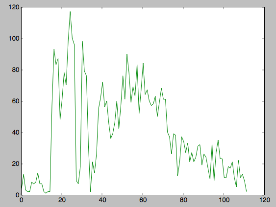

12.31.2012 13:18
2012 in review
It's the end of an insane year for
me. As so many do, it is also time to review the last year. What
were my objects? And key results? Back in January, I packed up my
car and drove from New Hampshire to the San Francisco Bay Area. My
position at UNH switched from research assistant professor to
affiliate faculty after 6 and half years as I moved to Google as a
GIS Data Engineer and Head of Ocean Engineering. I started at
Google on Jan 9 and it's been a while ride since. Google has a pace
and scale that boggle the brain. I have read more code this year
than all of my prior years combined. How I use and think about
version control have gone through a radical shift. Changes have
become more like a conversation rather than the broken road
stretching out behind me. The concept of "big data" has shift
upward to a point where I'm desensitized to the whole thing. First
some stats.
My non-google / non-spacecraft work logs show a massive drop in volume. I started seriously trying to do an electronic work log back in 2004.
Also, I got introduced to the concept of logging all shell commands that I type. I spend most of my day in Linux with the command line, emacs and Chrome. My shell log is at 54000 commands (12K of those are ls, cd, pushd or popd). I've run build almost 4K times from the shell and git (and related tools) more that 6000 times. Sadly, with my revision control work spread across many many repositories (some public, some private and spread across cvs, svn, hg, git, and perforce), it's very hard to get any useful numbers about versions of things I checked in. In the past, I had one master svn repo that had most of my projects, but that just did not give me the flexibility I needed. One favorit tool... I used grep 3700 times last year on my workstation. Only recently, have I started to extend that kind of logging to my laptop (4K commands so far).
Taking a quick look at my blog posts, I see a sad downward trend. I fell off a blogging cliff September of 2009. Which surprises me. I though it would be April 2010 with Deepwater Horizon exploding. Yes, I'm too lazy to properly lable this graph.
So what is the timeline of major events this year? I can't share all of them for a number of reasons and there is a lot of work in progress, but here they are in chronological order from oldest to newest.
My non-google / non-spacecraft work logs show a massive drop in volume. I started seriously trying to do an electronic work log back in 2004.
wc -l kurt-*.{org,txt}
62 kurt-2002.txt
475 kurt-2003.txt
12139 kurt-2004.txt
6644 kurt-2005.txt
19332 kurt-2006.txt
28292 kurt-2007.txt
28746 kurt-2008.txt
18740 kurt-2009.txt
30945 kurt-2010.org
26031 kurt-2011.org
6823 kurt-2012.org
But in contrast, my log at Google is no 58000 lines long for 2012.
In org mode, I drop todo items as I work along and did that just
over 2000 times. 500 of those have been marked done so far and 100
got punted (meaning I'm going to just let the idea go). I'm hoping
to power through those items and push the key todo items to the
beginning of my 2013 log. I don't have the full GTD
(emacs org mode
and GTD) thing going on, but it pretty much works for me. I
have a lot of ideas where I don't know the merit of the concept,
but I would like to know when I came up with it and how it
proogressed.Also, I got introduced to the concept of logging all shell commands that I type. I spend most of my day in Linux with the command line, emacs and Chrome. My shell log is at 54000 commands (12K of those are ls, cd, pushd or popd). I've run build almost 4K times from the shell and git (and related tools) more that 6000 times. Sadly, with my revision control work spread across many many repositories (some public, some private and spread across cvs, svn, hg, git, and perforce), it's very hard to get any useful numbers about versions of things I checked in. In the past, I had one master svn repo that had most of my projects, but that just did not give me the flexibility I needed. One favorit tool... I used grep 3700 times last year on my workstation. Only recently, have I started to extend that kind of logging to my laptop (4K commands so far).
Taking a quick look at my blog posts, I see a sad downward trend. I fell off a blogging cliff September of 2009. Which surprises me. I though it would be April 2010 with Deepwater Horizon exploding. Yes, I'm too lazy to properly lable this graph.

2012-01 11 2012-02 11 2012-03 18 2012-04 17 2012-05 21 2012-06 11 2012-07 5 2012-08 22 2012-09 11 2012-10 13 2012-11 9 2012-12 2Compared to my normal self, that's not a lot of posts.
So what is the timeline of major events this year? I can't share all of them for a number of reasons and there is a lot of work in progress, but here they are in chronological order from oldest to newest.
- Started at Google
- Attended my first PyData and PyCon conferences
- Released WhaleAlert in the Apple store for iOS
- Went to DC to talk about WhaleAlert at a Congressional Workshop
- Finished all of Research Tools 2011 with a 32 hour YouTube playlist
- On the Mars Science Laboratory / Curiosity team for landing
- Worked on how to effectily use NOAA's VDatum to convert between vertical datums
- Massively updated libais to parse many more messages. Some work on ais-areanotices-py.
- Taught lectures at UNH over Google Hangouts On Air
- Met tons of awesome people from all over the world. So many that my head is going to explode.
- Went to AGU as an exhibitor for the first time
- Got married!
12.25.2012 12:05
ECDIS - new and revolutionary?
I saw this video posted yesterday on
the e-Navigation LinkedIn group.
Before I switch tacts, this does look like a well done video judging from the promo. We definitely need works like this to push things forward. The S1xx standards work has got so many people confused and there are a lot of moving pieces.
However...
Sorry to be negative, but I gotta say it. I'm a little confused by the promo trailer. To me, ECDIS is stuck back in the late 1990's. It's not very new or radical... there is so much frustration around lack of innovation because of the quagmire of slow moving standards and really bad/closed/expensive testing and approval process. That's just my take as someone who tried to help the ECDIS world get better. Why we trust massive ships to ECDIS and MS Windows is beyond me. Then I sat in on ECDIS training for a class and was even more disheartened. When I picked up one of the leading watch standing books back in 2009, there was not even a mention of AIS or any of these other key electronics that mariners count on. How are the mariners supposed to know if this stuff is working correctly if there reference books don't even mention it? I have been on the USCG to release a testing guide for AIS since 2007 and have seen drafts, as recently as 2009/10, but where is this material? How do you know if your fancy electronic systems are all individually working and working together properly? And how do you know what is in the most recent chart updates and the data coming in over digital radios (AIS, etc) is valid? Maybe that's covered somewhere (in the full video?), but I really don't know where. It took the USCG almost 3 years to notice a class B AIS in NH (on a NOAA owed / university operated ship) having the wrong MMSI... one with a prefix for a small island nation.
To top it off, the wikipedia entry for ECDIS is terrible. I try to contribute to the AIS page as much as I can, but I'm not expert enough (or have the time to get up to speed) to do much with ECDIS. It would be a great student project to write a massively improved version of this page.
Most of the innovation has been happening in the unregulated ECS, Portable Pilot Unit (PPS), mobile (iOS and Android phones/tablets), etc. OpenCPN had support for the IMO Circ 289 Area Notice before any ECDIS and I'm not sure that any ECDIS has even begun. One ECDIS vender even participated in the RTCM working group that developed the initial work that got turned into IMO's Circ 289. ECDIS appears to me as a land of both stagnation and fragmentation (fragstation?).
I've tried to make an open impact on this kind of stuff, but we need more people to contribute.
My 2009 visit to Kings Point.
Before I switch tacts, this does look like a well done video judging from the promo. We definitely need works like this to push things forward. The S1xx standards work has got so many people confused and there are a lot of moving pieces.
However...
Sorry to be negative, but I gotta say it. I'm a little confused by the promo trailer. To me, ECDIS is stuck back in the late 1990's. It's not very new or radical... there is so much frustration around lack of innovation because of the quagmire of slow moving standards and really bad/closed/expensive testing and approval process. That's just my take as someone who tried to help the ECDIS world get better. Why we trust massive ships to ECDIS and MS Windows is beyond me. Then I sat in on ECDIS training for a class and was even more disheartened. When I picked up one of the leading watch standing books back in 2009, there was not even a mention of AIS or any of these other key electronics that mariners count on. How are the mariners supposed to know if this stuff is working correctly if there reference books don't even mention it? I have been on the USCG to release a testing guide for AIS since 2007 and have seen drafts, as recently as 2009/10, but where is this material? How do you know if your fancy electronic systems are all individually working and working together properly? And how do you know what is in the most recent chart updates and the data coming in over digital radios (AIS, etc) is valid? Maybe that's covered somewhere (in the full video?), but I really don't know where. It took the USCG almost 3 years to notice a class B AIS in NH (on a NOAA owed / university operated ship) having the wrong MMSI... one with a prefix for a small island nation.
To top it off, the wikipedia entry for ECDIS is terrible. I try to contribute to the AIS page as much as I can, but I'm not expert enough (or have the time to get up to speed) to do much with ECDIS. It would be a great student project to write a massively improved version of this page.
Most of the innovation has been happening in the unregulated ECS, Portable Pilot Unit (PPS), mobile (iOS and Android phones/tablets), etc. OpenCPN had support for the IMO Circ 289 Area Notice before any ECDIS and I'm not sure that any ECDIS has even begun. One ECDIS vender even participated in the RTCM working group that developed the initial work that got turned into IMO's Circ 289. ECDIS appears to me as a land of both stagnation and fragmentation (fragstation?).
I've tried to make an open impact on this kind of stuff, but we need more people to contribute.
My 2009 visit to Kings Point.
12.19.2012 10:13
neuroscience and the mariner
Saw this via the linked in
eNavigation news group (yes, I'm still severely bothered by the
official definitions of eNav). I just had to comment. It's
important to make sure that related research gets linked together
so that the community can collectively make progress and avoid
silo'ing.
Eye on the Future of eNavigation
This kind of research has been done for quite a while at UNH Center for Coastal and Ocean Mapping (CCOM). Roland Arsenault, Dan Pineo, Matt Plumlee, Colin Ware and others there have done eye tracking, modeling the human vision system task performance, and much more with a strong bent towards what tasks mariners perform. (note: I worked at CCOM from 2005-11 and am still Affiliate Faculty w/ CCOM). Check out the AR Simulator and Flow Vis projects for starters and PhD theses from Matt Plumlee and Dan Pineo.
It's great to see more people getting into the topic!
See more at: CCOM VisLab.
Eye on the Future of eNavigation
... His group focuses mainly on using a specially-designed helmet to track the gaze of a s eyes across bridge equipment as well as employing speech recorders to process voice commands onboard. Capturing the needs of the user is at the heart of e-Navigation and Dr Nikitakos believes usability will be key to getting personnel to adapt to the new equipment and systems they might be using. ...However interesting, this statement confuses the heck out of me:
We are defining usability in terms of ISO standards as the extent to which equipment can be used to achieve specific goals effectively and efficiently.So here was the comment that I posted:
This kind of research has been done for quite a while at UNH Center for Coastal and Ocean Mapping (CCOM). Roland Arsenault, Dan Pineo, Matt Plumlee, Colin Ware and others there have done eye tracking, modeling the human vision system task performance, and much more with a strong bent towards what tasks mariners perform. (note: I worked at CCOM from 2005-11 and am still Affiliate Faculty w/ CCOM). Check out the AR Simulator and Flow Vis projects for starters and PhD theses from Matt Plumlee and Dan Pineo.
It's great to see more people getting into the topic!
See more at: CCOM VisLab.